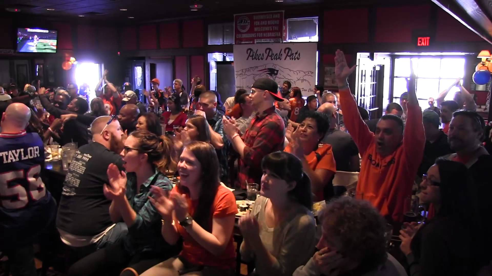

União do desporto
O desporto é algo que consegue reunir milhões de pessoas. As maiores organizações desportivas espalham constantemente mensagens de união, respeito e integração - mensagens importantes não só para os que praticam esse desporto, mas também para os que assistem.
Esta componente do entretenimento é também uma mais valia económica. As pessoas que se consideram ávidas fãns de algum desporto, mesmo que o não pratiquem, fazem esforços monetários para acompanhar ao máximo o desporto, seja este qualquer desporto.

Variedade desportiva
Portugal está associado principalmente, quando falamos de desporto, com a imagem do futebol e isto é algo que, a princípio pode parecer uma desvantagem pela razão de limitar um país a uma imagem. No entanto, é algo que está enraízado na cultura relativamente recente do país. Apesar disso, a cultura é uma constante progressão e outros desportos estão a crescer continuamente.
Tem havido, nos últimos anos um crescimento acentuado no crescimento da popularidade de outros desportos e, consequentemente, um crescimento na prática destes mesmos em Portugal.
O andebol, o voleibol, o basquetebol e a natação são, nesta ordem, as 4 modalidades desportivas mais praticadas em Portugal. E têm demonstrado um continuo crescimento, tal como o total de federados no geral.